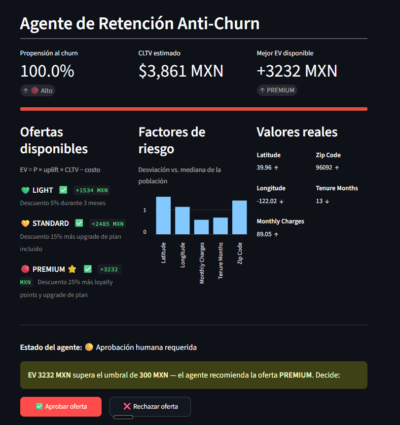

Un modelo de propensión calibrado alimenta a un agente LLM que razona sobre el cliente, calcula el valor económico esperado de la mejor oferta y deja la ejecución final bajo una compuerta humana.
No es "otro modelo de churn" ni un chatbot. Es un sistema de cuatro capas: ML clásico, economía de ofertas, capa agéntica (LangGraph) y API REST.
Las telcos pierden ingresos por churn. El error común es predecir quién se irá y disparar descuentos a ciegas — se gasta retención en clientes que no la necesitan o que no valen lo que cuesta retenerlos.
Entrenas un clasificador, ordenas por probabilidad de churn y mandas un descuento a los de arriba. Ignora el valor del cliente, el coste de la oferta y la probabilidad de que la oferta realmente lo retenga.
Se prioriza por valor económico esperado (EV = P · uplift · CLTV − costo) y un humano aprueba la acción en clientes de alto valor — supervisión humana en decisiones de alto impacto.
Cada capa hace una cosa y la hace bien. El dato fluye de izquierda a derecha; la última palabra es de un humano cuando hay dinero en juego.
LightGBM + calibración isotónica. Devuelve una probabilidad real en [0,1], no un score. SHAP explica los drivers.
LightGBM · SHAPEV = P · uplift · CLTV − costo, por cada tier del catálogo (LIGHT / STANDARD / PREMIUM). Se elige el de mayor EV.
economics/ev.pyGrafo LangGraph: el LLM llama tools de solo lectura, observa y redacta la recomendación con su justificación económica.
LangGraph · ClaudeFastAPI con Swagger autogenerado. HITL en dos pasos: analyze → approve, listo para un CRM.
Compuerta humana (HITL). Cuando el EV supera el umbral
(300 MXN por defecto), el grafo se suspende con el interrupt()
nativo de LangGraph y cede el control a un operador para aprobar o rechazar.
El disparo depende del EV calculado por el modelo y la economía — no de lo que
"decida" el LLM.
Eliges un cliente y ves al instante propensión, CLTV, EV por oferta, los factores de riesgo y la compuerta HITL. Corre con un LLM determinista sobre datos de muestra: sin API key y sin coste, pero la propensión, el EV y el HITL son reales.

Demo interactiva desplegada en Hugging Face Spaces · layout en tres columnas + compuerta HITL.
Cada elección está documentada en un ADR — qué se eligió y qué se descartó.
Gestión de dependencias y lockfile reproducible; Python instalado automáticamente.
Formato, lint, tipos estrictos en el núcleo y hooks antes de cada commit.
Propensión calibrada y drivers explicables por cliente.
Loop ReAct con interrupt() nativo para el human-in-the-loop.
REST con Swagger autogenerado y flujo HITL en dos pasos.
Validación de esquema y guardia explícita contra leakage.
Escaneo de secretos + regex anti prompt-injection antes del LLM.
UI offline determinista desplegada en Hugging Face Spaces.
Lint + tipos + tests + gate de evaluación del agente en cada PR.
Test set de 1 409 clientes (churn rate 26.5 %). No se reporta accuracy: con clases desbalanceadas es engañosa.
| Modelo | AUC-ROC | AUC-PR | Brier | lift@decil1 |
|---|---|---|---|---|
| Mayoría (baseline) | 0.500 | 0.265 | 0.195 | 1.0× |
| Logística (baseline) | ~0.810 | ~0.580 | ~0.155 | ~2.2× |
| LightGBM calibrado | ~0.848 | ~0.649 | ~0.135 | ~2.8× |
El 10 % de clientes que el modelo marca como más propensos contiene ~2.8× más churners reales que el promedio. La calibración isotónica garantiza que la probabilidad sea utilizable directamente en la fórmula de EV, sin reescalar.
Cada riesgo del pipeline tiene una mitigación explícita y testeada.
.env gitignored, .env.example sin valores, gitleaks en pre-commit y CI.
LeakageError si Churn Score / Reason / Category intentan entrar como features.
11 patrones regex en el input_guard antes de llamar al LLM.
check_output_offer verifica que el tier pertenezca al catálogo.
interrupt() de LangGraph cuando el EV supera el umbral configurable.
Las tools son de solo lectura; el agente nunca ejecuta acciones externas.
Lo que importa de un proyecto no es solo qué se construyó, sino cómo se decidió.
Churn Score y Churn Reason derivan del propio churn; usarlos arruina la credibilidad aunque las métricas se vean perfectas. Una guardia explícita hace que el error sea ruidoso e inmediato.
El EV exige una probabilidad real en [0,1]. Sin calibración isotónica el modelo sobreestima a los clientes de alto riesgo y el negocio decidiría con datos falsos.
interrupt() nativo justifica la dependenciaUn HITL en un grafo cíclico hecho a mano requiere checkpointing, serialización y callbacks. LangGraph lo da en tres líneas; el trade-off de dependencias vale para este patrón.
Con dependency_overrides los tests inyectan un grafo mockeado sin levantar servidor: corren en milisegundos y son deterministas.
Repo, entorno uv, CI y docs base.
Descarga, validación y split sin leakage.
Propensión calibrada + SHAP + baselines.
LangGraph ReAct + guardrails + HITL.
FastAPI REST + Swagger + tests.
Eval set determinista + gate en CI.
Tracing de costo y latencia por sesión.
Streamlit offline + deploy en HF Spaces.
Declarar el alcance real es parte de la credibilidad del sistema.
MemorySaver se pierde al reiniciar; en producción sería PostgresSaver.retention_uplift son supuestos; se calibrarían con un A/B real.La demo arranca sin secretos ni instalación. El código, los ADRs y el CHANGELOG cuentan el resto de la historia.